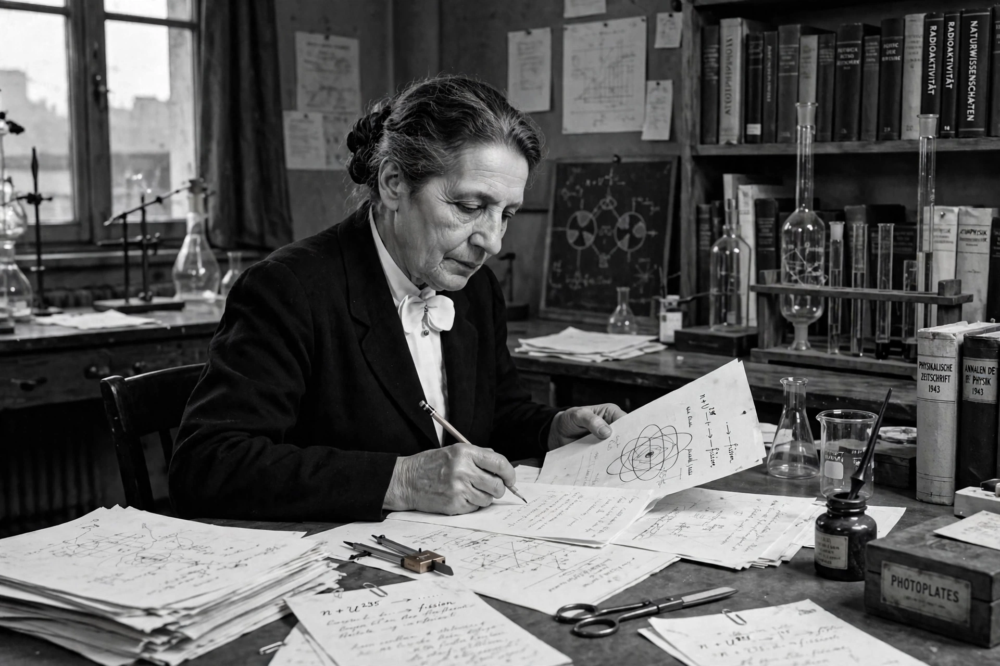

Lise Meitner
| Born | 7 November 1878, Vienna, Austria-Hungary |
|---|---|
| Died | 27 October 1968 (aged 89), Cambridge, England |
| Known for | Explanation of Nuclear fission, Auger–Meitner effect, protactinium |
| Institutions | Kaiser Wilhelm Institute, Berlin; Stockholm |

[Image: Photograph of Lise Meitner at her laboratory desk in Berlin]Lise Meitner (7 November 1878 – 27 October 1968) was an Austrian-Swedish physicist who was instrumental in the discovery of nuclear fission. Working in Berlin, she collaborated for three decades with chemist Otto Hahn; after fleeing Nazi Germany in 1938, she and her nephew Otto Robert Frisch provided the theoretical explanation of Hahn and Strassmann's experiments and coined the term 'fission'.
Meitner also discovered the element protactinium (with Hahn) and the radiationless transition now called the Auger–Meitner effect. Despite 49 nominations, she never received the Nobel Prize — Hahn alone received the 1944 Chemistry prize for fission — an omission widely regarded as one of the Nobel committees' gravest injustices. Element 109, meitnerium, is named in her honour.
Early life and Berlin years
Born Elise Meitner in Vienna to a Jewish family of lawyers, she earned her doctorate in physics in 1906 — among the first women to do so in Vienna — and moved to Berlin in 1907, attending Max Planck's lectures and beginning her collaboration with Otto Hahn. Initially she worked unpaid and was barred from the institute's main laboratories as a woman; by 1917 she headed her own physics section at the Kaiser Wilhelm Institute, and she and Hahn isolated protactinium in 1918.
Fission
In the 1930s the Berlin group (with Fritz Strassmann) bombarded uranium with neutrons, competing with groups in Paris and Rome. When Germany annexed Austria in 1938, Meitner's Austrian citizenship no longer protected her; she fled to the Netherlands and then Stockholm with help from Dutch physicists. In December 1938 Hahn and Strassmann found barium among the products; over Christmas in Sweden, Meitner and Frisch realised the nucleus had split — using Bohr's liquid-drop model and E = mc² to account for the released energy — and published the explanation in Nature in February 1939.
Meitner refused to join the Manhattan Project ('I will have nothing to do with a bomb!'). After the war she worked in Sweden, became a Swedish citizen in 1949, and campaigned for the peaceful use of atomic energy. She died in Cambridge in 1968; her nephew Frisch's memoir and later biographies restored her central place in the fission story.